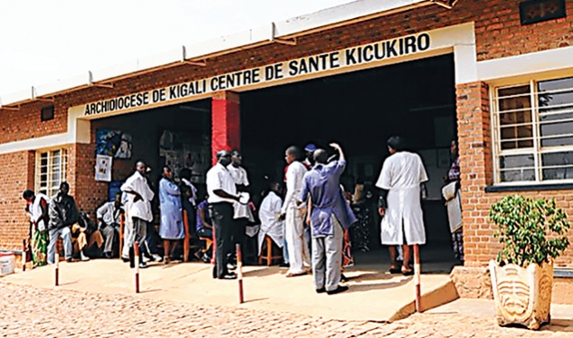
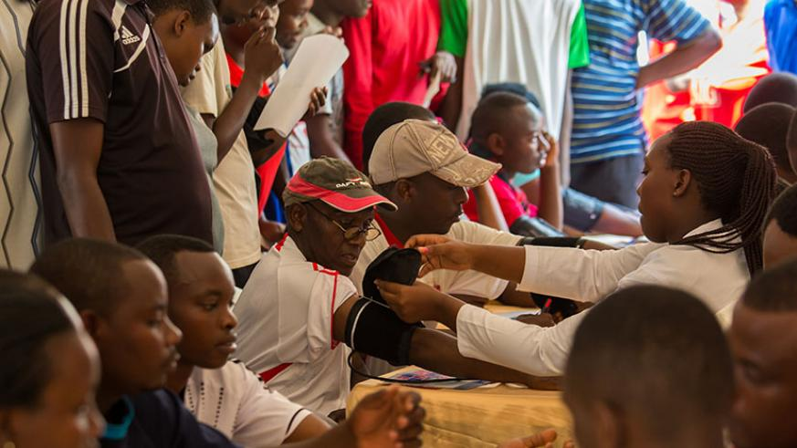

UX Challenge
Rwanda Social Security Board
Rwanda Social Security Board (RSSB) was established by the law No.45/2010 of 14/12/2010 that determines its mission, organization and functioning. This institution was established after the merger of Social Security Fund of Rwanda (SSFR) with Rwanda Health Insurance Fund (RAMA). This law has been amandeted and completed by the law n◦ Nº04//2015 of 11/03/2015 that gives RSSB the responsibility to manage Community Based Health Insurance (Mutuelle de santé). The mandate of the institution is to administer social security in the country. The branches currently managed include; pension, occupational risks, Health insurance and Community Based Health Insurance. The benefits offered under the different branches are; old age, invalidity, survivorship, work injuries and work related diseases and health insurance benefits.
Ministry of Health
The main goal of the Ministry of Health is to provide and continually improve the health services of the Rwandan population through the provision of preventive, curative and rehabilitative health care thereby contributing to the reduction of poverty and enhancing the general well-being of the population.
- 
- 